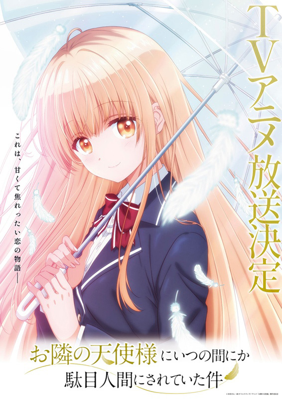

あらすじ

高校1年の秋、公園で雨に濡れたまま動かない「天使様」こと椎名真昼を見かねて傘を押し付けた藤宮周は、日頃の不摂生がたたって風邪をひいてしまう。
傘を返しに来た真昼はそのことに罪悪感を抱き看病を申し出たが、隣人である周の汚部屋とあまりに不摂生な食生活を見て呆れ、掃除の手伝いやおかずの差し入れなどをするようになり、やがて周の部屋で夕食を作って食卓を共にするようになった。
周は作り物のような「天使様」に興味を持たないが紳士的で、真昼は「天使様」としてではなく率直で辛辣な素の態度を示す。同じ時間を共有するうちに2人は徐々に打ち解け、お互いのことを知り、少しずつ惹かれ合っていく——。
可愛らしい隣人との、甘くて焦れったい恋の物語。